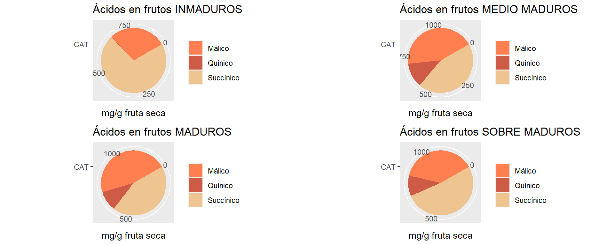
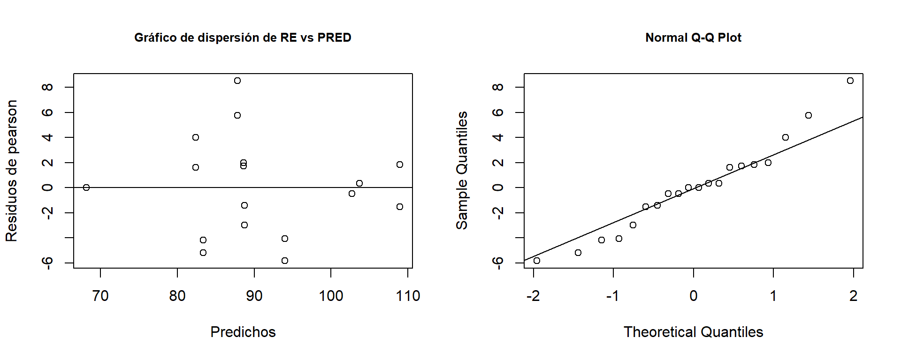
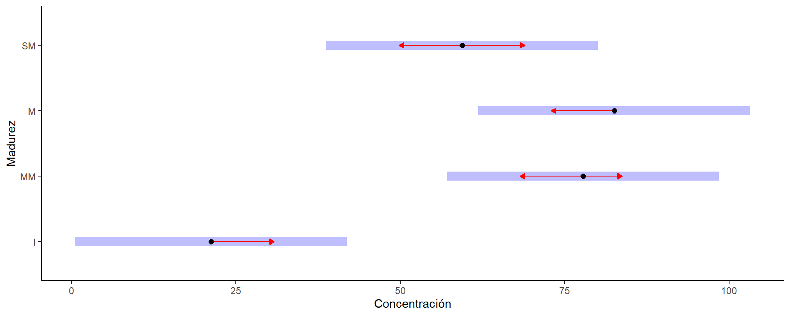
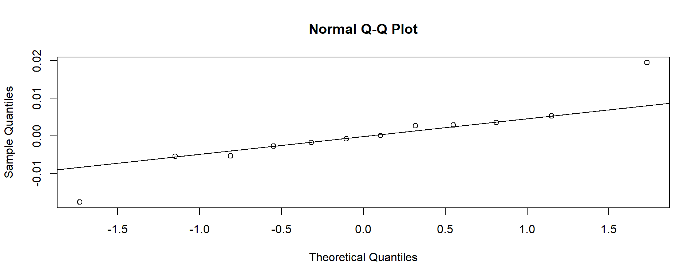
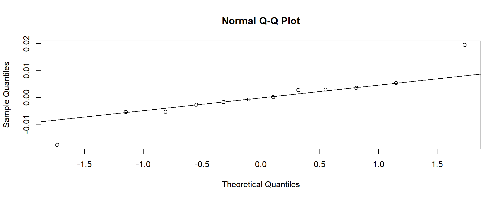
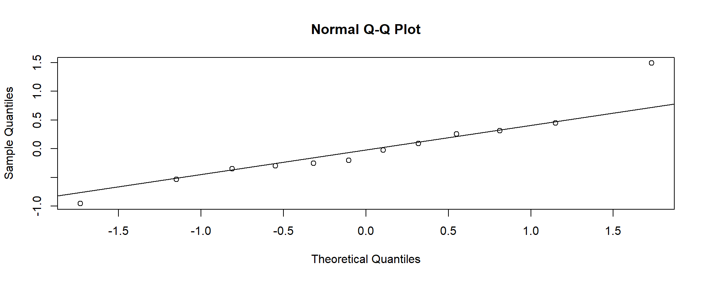
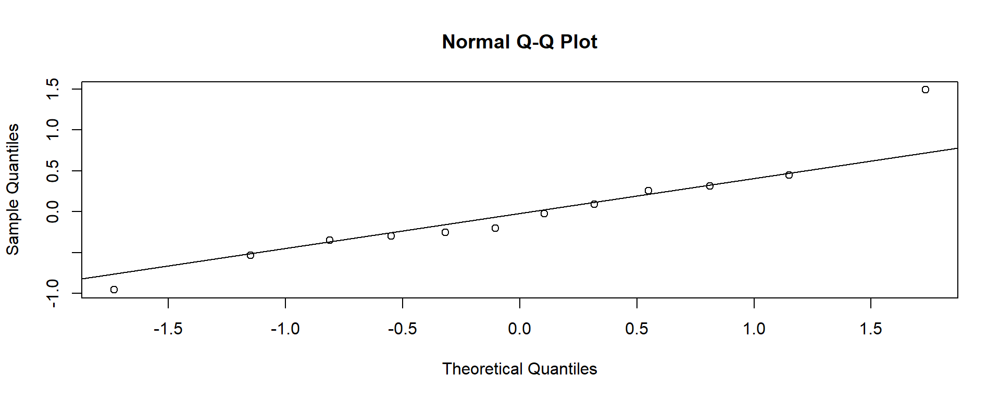

Maturity
The aim of this work was to study the evolution of fruit size and weight together with the soluble solid and total titratable acidity contents with the patterns of accumulation of chlorophylls, carotenoids, phenols and antioxidant activity during ripening of Hexachlamys edulis fruits, to understand the optimal time and conditions needed to obtain maximum nutraceutical characteristics. Fruits were harvested from H. edulis plants growing at the experimental field of the University of Morón (Moreno, Buenos Aires, 34°35’4.98" SL, 58°48’52.09" WL, 14 m.a.s.l.).

A caption
Variables físicas
Peso fresco del fruto (PFF)
Tabla descriptiva
## MADUREZ N PFF sd se ci
## 1 Inmaduro 10 19.46590 8.371828 2.647404 5.988845
## 2 Medio Maduro 10 40.12070 7.611044 2.406823 5.444613
## 3 Maduro 10 39.55260 17.661441 5.585038 12.634234
## 4 SobreMaduro 7 38.50057 10.492754 3.965888 9.704179Gráfico con desvío estándar

Boxplot

Relacion media-varianza

Modelos
- M0: modelo sólo con el factor fijo madurez.
- M1: M0 + modelado de la varinza por varIdent
Eleccción de modelos por AIC
## df AIC
## M0 5 293.6096
## M1 8 273.1772Se elije el modelo M1
Verificación de supuestos

##
## Shapiro-Wilk normality test
##
## data: e
## W = 0.93662, p-value = 0.03605## Levene's Test for Homogeneity of Variance (center = mean)
## Df F value Pr(>F)
## group 3 2.0968 0.1195
## 33Anova
## Denom. DF: 33
## numDF F-value p-value
## (Intercept) 1 438.1966 <.0001
## MADUREZ 3 12.7130 <.0001Comparaciones a posteriori
## $emmeans
## MADUREZ emmean SE df lower.CL upper.CL
## Inmaduro 19.5 3.74 33 11.9 27.1
## Medio Maduro 40.1 3.74 33 32.5 47.7
## Maduro 39.6 3.74 33 31.9 47.2
## SobreMaduro 38.5 4.47 33 29.4 47.6
##
## Confidence level used: 0.95
##
## $contrasts
## contrast estimate SE df t.ratio p.value
## Inmaduro - Medio Maduro -20.655 5.29 33 -3.903 0.0024
## Inmaduro - Maduro -20.087 5.29 33 -3.796 0.0032
## Inmaduro - SobreMaduro -19.035 5.83 33 -3.264 0.0130
## Medio Maduro - Maduro 0.568 5.29 33 0.107 0.9995
## Medio Maduro - SobreMaduro 1.620 5.83 33 0.278 0.9924
## Maduro - SobreMaduro 1.052 5.83 33 0.180 0.9979
##
## P value adjustment: tukey method for comparing a family of 4 estimates
Peso seco de fruto (PSF)
Tabla descriptiva
## MADUREZ N PSF sd se ci
## 1 Inmaduro 10 4.140500 2.194326 0.6939069 1.569727
## 2 Medio Maduro 10 6.622500 2.345851 0.7418231 1.678120
## 3 Maduro 10 4.997900 2.840011 0.8980904 2.031622
## 4 SobreMaduro 7 6.506857 2.377224 0.8985063 2.198566Gráfico con desvío estándar

Boxplot

Relacion media-varianza

Modelos
- M0s: modelo sólo con el factor fijo madurez.
- M1s: M0 + modelado de la varinza por varIdent
- M1si: M1 con variable respuesta inversa (1/Y)
## df AIC
## M0s 5 177.31681
## M1s 8 177.17677
## M1si 8 -52.63631Se elije el modelo M1si
Verificación de supuestos

##
## Shapiro-Wilk normality test
##
## data: e
## W = 0.97956, p-value = 0.7162## Levene's Test for Homogeneity of Variance (center = mean)
## Df F value Pr(>F)
## group 3 0.1788 0.91
## 33Anova
## Denom. DF: 33
## numDF F-value p-value
## (Intercept) 1 329.0795 <.0001
## MADUREZ 3 5.1402 0.005Comparaciones a posteriori
## $emmeans
## MADUREZ emmean SE df lower.CL upper.CL
## Inmaduro 19.5 3.74 33 11.9 27.1
## Medio Maduro 40.1 3.74 33 32.5 47.7
## Maduro 39.6 3.74 33 31.9 47.2
## SobreMaduro 38.5 4.47 33 29.4 47.6
##
## Confidence level used: 0.95
##
## $contrasts
## contrast estimate SE df t.ratio p.value
## Inmaduro - Medio Maduro -20.655 5.29 33 -3.903 0.0024
## Inmaduro - Maduro -20.087 5.29 33 -3.796 0.0032
## Inmaduro - SobreMaduro -19.035 5.83 33 -3.264 0.0130
## Medio Maduro - Maduro 0.568 5.29 33 0.107 0.9995
## Medio Maduro - SobreMaduro 1.620 5.83 33 0.278 0.9924
## Maduro - SobreMaduro 1.052 5.83 33 0.180 0.9979
##
## P value adjustment: tukey method for comparing a family of 4 estimates
Humedad
Diámetro
Peso seco semilla
Tabla resumen

ANOVA for the fresh fruit weight (FFW). dry fruit weight (DFW). dry fruit weight as percentage of fresh fruit weight (DFW%). maximum equatorial fruit diameter (MAEFD). minimum equatorial fruit diameter (MIEFD). polar fruit diameter (PFD). seed number (SN). dry seed weight (DSW) and dry seed weight/dry fruit weight ratio (DSW/DFW) considering the fruit ripening of H. edulis “ubajay” harvested from the plants growing in the experimental field of the University of Morón in Moreno (Buenos Aires) during December 2018.
Colorimetría
Variables químicas
The objective of this second part is to study the organic acids, carbohydrates and cations in the different stages of maturity.
Carotenoides
Clorofilas
Fenoles
Actividad anti oxidante (DPPH)
Tabla descriptiva
##
## Descriptive statistics by group
## group: I
## vars n mean sd median trimmed mad min max range skew kurtosis se
## X1 1 12 94.66 6.71 96.78 96.31 1.75 74.17 98.61 24.44 -2.32 4.27 1.94
## ------------------------------------------------------------
## group: MM
## vars n mean sd median trimmed mad min max range skew kurtosis
## X1 1 12 61.99 24.92 59.17 61.63 30.23 30.61 96.91 66.3 0.25 -1.65
## se
## X1 7.19
## ------------------------------------------------------------
## group: M
## vars n mean sd median trimmed mad min max range skew kurtosis
## X1 1 12 80.07 17.77 85.85 81.54 14.26 49.75 95.71 45.96 -0.55 -1.46
## se
## X1 5.13
## ------------------------------------------------------------
## group: SM
## vars n mean sd median trimmed mad min max range skew kurtosis se
## X1 1 12 22.29 30.04 9.02 19.05 9.54 0 77.05 77.05 0.97 -1.01 8.67Boxplot de capacidad anti oxidante para distintos grados de madurez

Modelo
## Linear mixed model fit by REML ['lmerMod']
## Formula: In ~ Trata + (1 | Conc)
## Data: Datos0
## REML criterion at convergence: 375.4531
## Random effects:
## Groups Name Std.Dev.
## Conc (Intercept) 18.47
## Residual 13.86
## Number of obs: 48, groups: Conc, 4
## Fixed Effects:
## (Intercept) TrataMM TrataM TrataSM
## 94.66 -32.67 -14.59 -72.37Supuestos

##
## Shapiro-Wilk normality test
##
## data: e
## W = 0.98371, p-value = 0.7371Anova
## Analysis of Deviance Table (Type II Wald chisquare tests)
##
## Response: In
## Chisq Df Pr(>Chisq)
## Trata 183.72 3 < 2.2e-16 ***
## ---
## Signif. codes: 0 '***' 0.001 '**' 0.01 '*' 0.05 '.' 0.1 ' ' 1Comparaciones a posteriori
## $emmeans
## Trata emmean SE df lower.CL upper.CL
## I 94.7 10.1 3.86 66.30 123.0
## MM 62.0 10.1 3.86 33.63 90.3
## M 80.1 10.1 3.86 51.71 108.4
## SM 22.3 10.1 3.86 -6.07 50.7
##
## Degrees-of-freedom method: kenward-roger
## Confidence level used: 0.95
##
## $contrasts
## contrast estimate SE df t.ratio p.value
## I - MM 32.7 5.66 41 5.775 <.0001
## I - M 14.6 5.66 41 2.579 0.0628
## I - SM 72.4 5.66 41 12.793 <.0001
## MM - M -18.1 5.66 41 -3.197 0.0137
## MM - SM 39.7 5.66 41 7.017 <.0001
## M - SM 57.8 5.66 41 10.214 <.0001
##
## Degrees-of-freedom method: kenward-roger
## P value adjustment: tukey method for comparing a family of 4 estimates
Evolución de la Avtividad anti oxidante en la maduración

Tabla resumen

ANOVA for the soluble solids (SS). pH (pH). titulable total acidity (TTA) and soluble solids/ titulable total acidity (SS/TTA). total polyphenols (TP). DPPH radical scavenging activity (DPPH) considering the fruit ripening stages of H. edulis “ubajay” harvested from the plants growing in the experimental field of the University of Morón in Moreno (Buenos Aires) during December 2018.
Acidos orgánicos
Concentración de ácidos orgánicos a distintos estados de madurez

Evolución del perfíl de ácidos orgánicos en la maduración

Ácido málico
Modelo y supuestos
## Linear mixed-effects model fit by REML
## Data: mal
## Log-restricted-likelihood: -13.4038
## Fixed: CON ~ MAD
## (Intercept) MADMM MADM MADSM
## 69.57472 20.61361 35.57194 15.21861
##
## Random effects:
## Formula: ~1 | REP
## (Intercept) Residual
## StdDev: 3.442304 1.052468
##
## Variance function:
## Structure: Different standard deviations per stratum
## Formula: ~1 | MAD
## Parameter estimates:
## M MM SM I
## 1.000000e+00 6.548053e+00 3.630882e+00 1.042869e-14
## Number of Observations: 20
## Number of Groups: 3
##
## Shapiro-Wilk normality test
##
## data: e
## W = 0.96348, p-value = 0.6154Anova
## numDF denDF F-value p-value
## (Intercept) 1 14 2076.7351 <.0001
## MAD 3 14 839.4718 <.0001Test de Tukey
## $emmeans
## MAD emmean SE df lower.CL upper.CL
## I 69.6 2.07 2 60.7 78.5
## MM 90.2 3.44 2 75.4 105.0
## M 105.1 2.03 2 96.4 113.9
## SM 84.8 2.53 2 73.9 95.7
##
## Degrees-of-freedom method: containment
## Confidence level used: 0.95
##
## $contrasts
## contrast estimate SE df t.ratio p.value
## I - MM -20.61 2.870 14 -7.182 <.0001
## I - M -35.57 0.712 14 -49.966 <.0001
## I - SM -15.22 1.660 14 -9.167 <.0001
## MM - M -14.96 2.846 14 -5.256 0.0006
## MM - SM 5.39 3.217 14 1.677 0.3710
## M - SM 20.35 1.618 14 12.578 <.0001
##
## Degrees-of-freedom method: containment
## P value adjustment: tukey method for comparing a family of 4 estimates
Conclusiones
Existen diferencias significativas entre estados de madurez. En el estado maduro se presentó el pico de concentración de ácido málico.
Ácido quínico
Modelo y supuestos
## Linear mixed-effects model fit by REML
## Data: qui
## Log-restricted-likelihood: -38.87277
## Fixed: CON ~ MAD
## (Intercept) MADM MADSM
## 25.315000 -2.626667 -2.396667
##
## Random effects:
## Formula: ~1 | REP
## (Intercept) Residual
## StdDev: 2.272881 0.7607257
##
## Variance function:
## Structure: Different standard deviations per stratum
## Formula: ~1 | MAD
## Parameter estimates:
## M MM SM
## 1.000000 4.643839 5.273859
## Number of Observations: 18
## Number of Groups: 3
##
## Shapiro-Wilk normality test
##
## data: e
## W = 0.95506, p-value = 0.5097## Levene's Test for Homogeneity of Variance (center = median)
## Df F value Pr(>F)
## group 2 2.19 0.1464
## 15Anova
## numDF denDF F-value p-value
## (Intercept) 1 13 287.24268 <.0001
## MAD 2 13 1.58735 0.2417Conclusiones
No se encontraron diferencias entre estados de madurez.
Ácido succinico
Modelo y supuestos

##
## Shapiro-Wilk normality test
##
## data: e
## W = 0.96753, p-value = 0.6064## Levene's Test for Homogeneity of Variance (center = median)
## Df F value Pr(>F)
## group 3 1.4809 0.25
## 20Anova
## numDF denDF F-value p-value
## (Intercept) 1 18 2870.5218 <.0001
## MAD 3 18 12.3975 1e-04Test de Tukey
## $emmeans
## MAD emmean SE df lower.CL upper.CL
## I 112.3 3.32 2 98.1 127
## MM 92.5 3.32 2 78.2 107
## M 99.4 3.32 2 85.2 114
## SM 115.7 3.32 2 101.4 130
##
## Degrees-of-freedom method: containment
## Confidence level used: 0.95
##
## $contrasts
## contrast estimate SE df t.ratio p.value
## I - MM 19.85 4.37 18 4.544 0.0013
## I - M 12.89 4.37 18 2.952 0.0389
## I - SM -3.32 4.37 18 -0.760 0.8711
## MM - M -6.96 4.37 18 -1.592 0.4076
## MM - SM -23.17 4.37 18 -5.304 0.0003
## M - SM -16.22 4.37 18 -3.712 0.0079
##
## Degrees-of-freedom method: containment
## P value adjustment: tukey method for comparing a family of 4 estimates
Conclusiones
Se encontraron diferencias entre estados de madurez, los frutos inmaduros y sobre maduros presentaron las mayores concentraciones de ácido succínico.
Carbohidratos


Sacarosa
Modelo y supuestos
## Linear mixed-effects model fit by REML
## Data: sac
## Log-restricted-likelihood: -81.26522
## Fixed: CON ~ MAD
## (Intercept) MADMM MADM MADSM
## 21.20667 56.58167 61.33167 38.18167
##
## Random effects:
## Formula: ~1 | REP
## (Intercept) Residual
## StdDev: 0.2138294 11.76366
##
## Number of Observations: 24
## Number of Groups: 3
##
## Shapiro-Wilk normality test
##
## data: e
## W = 0.90638, p-value = 0.02945Anova
## numDF denDF F-value p-value
## (Intercept) 1 18 627.4974 <.0001
## MAD 3 18 33.6671 <.0001Test de Tukey
## $emmeans
## MAD emmean SE df lower.CL upper.CL
## I 21.2 4.8 2 0.536 41.9
## MM 77.8 4.8 2 57.118 98.5
## M 82.5 4.8 2 61.868 103.2
## SM 59.4 4.8 2 38.718 80.1
##
## Degrees-of-freedom method: containment
## Confidence level used: 0.95
##
## $contrasts
## contrast estimate SE df t.ratio p.value
## I - MM -56.58 6.79 18 -8.331 <.0001
## I - M -61.33 6.79 18 -9.030 <.0001
## I - SM -38.18 6.79 18 -5.622 0.0001
## MM - M -4.75 6.79 18 -0.699 0.8960
## MM - SM 18.40 6.79 18 2.709 0.0630
## M - SM 23.15 6.79 18 3.409 0.0151
##
## Degrees-of-freedom method: containment
## P value adjustment: tukey method for comparing a family of 4 estimates
Conclusiones
## We fitted a linear mixed model (estimated using REML and nlminb optimizer) to predict CON with MAD (formula: CON ~ MAD). The model included REP as random effect (formula: ~1 | REP). The model's total explanatory power is substantial (conditional R2 = 0.81) and the part related to the fixed effects alone (marginal R2) is of 0.81. The model's intercept, corresponding to MAD = I, is at 21.21 (95% CI [11.11, 31.30], t(18) = 4.41, p < .001). Within this model:
##
## - The effect of MAD [MM] is statistically significant and positive (beta = 56.58, 95% CI [42.31, 70.85], t(18) = 8.33, p < .001; Std. beta = 2.10, 95% CI [1.57, 2.63])
## - The effect of MAD [M] is statistically significant and positive (beta = 61.33, 95% CI [47.06, 75.60], t(18) = 9.03, p < .001; Std. beta = 2.27, 95% CI [1.74, 2.80])
## - The effect of MAD [SM] is statistically significant and positive (beta = 38.18, 95% CI [23.91, 52.45], t(18) = 5.62, p < .001; Std. beta = 1.42, 95% CI [0.89, 1.94])
##
## Standardized parameters were obtained by fitting the model on a standardized version of the dataset. 95% Confidence Intervals (CIs) and p-values were computed usingSe ajustaron modelos lineales mixtos (estimaciones por REML) para predecir las concentraciones (CON) de ácidos, sacáridos y cationes minerales en función del estado de madurez (MAD). Las repeticiones (REP) fueron incluidas como efectos aleatorios.
Glucosa
Modelo y supuestos
## Linear mixed-effects model fit by REML
## Data: glu
## Log-restricted-likelihood: -72.29835
## Fixed: CON ~ MAD
## (Intercept) MADMM MADM MADSM
## 95.588333 -6.098333 9.415000 67.541667
##
## Random effects:
## Formula: ~1 | REP
## (Intercept) Residual
## StdDev: 4.195899 0.3676143
##
## Variance function:
## Structure: Different standard deviations per stratum
## Formula: ~1 | MAD
## Parameter estimates:
## I M MM SM
## 1.00000 39.26662 35.85854 40.70737
## Number of Observations: 24
## Number of Groups: 3
##
## Shapiro-Wilk normality test
##
## data: e
## W = 0.88861, p-value = 0.01244Anova
## numDF denDF F-value p-value
## (Intercept) 1 18 1552.3962 <.0001
## MAD 3 18 41.9947 <.0001Test de Tukey
## $emmeans
## MAD emmean SE df lower.CL upper.CL
## I 95.6 2.43 2 85.1 106
## MM 89.5 5.90 2 64.1 115
## M 105.0 6.37 2 77.6 132
## SM 163.1 6.57 2 134.9 191
##
## Degrees-of-freedom method: containment
## Confidence level used: 0.95
##
## $contrasts
## contrast estimate SE df t.ratio p.value
## I - MM 6.10 5.38 18 1.133 0.6748
## I - M -9.41 5.89 18 -1.597 0.4049
## I - SM -67.54 6.11 18 -11.052 <.0001
## MM - M -15.51 7.98 18 -1.944 0.2455
## MM - SM -73.64 8.14 18 -9.045 <.0001
## M - SM -58.13 8.49 18 -6.848 <.0001
##
## Degrees-of-freedom method: containment
## P value adjustment: tukey method for comparing a family of 4 estimates
Fructosa
Modelo y supuestos
## Linear mixed-effects model fit by REML
## Data: fru
## Log-restricted-likelihood: -8.242518
## Fixed: sqrt(CON) ~ MAD
## (Intercept) MADMM MADM MADSM
## 12.2439332 -0.6606621 0.5143754 2.0936776
##
## Random effects:
## Formula: ~1 | REP
## (Intercept) Residual
## StdDev: 0.5959693 0.5585726
##
## Variance function:
## Structure: Different standard deviations per stratum
## Formula: ~1 | MAD
## Parameter estimates:
## I M MM SM
## 1.00000000 1.66708036 0.09984155 0.17046318
## Number of Observations: 24
## Number of Groups: 3
##
## Shapiro-Wilk normality test
##
## data: e
## W = 0.88462, p-value = 0.01031Anova
## numDF denDF F-value p-value
## (Intercept) 1 18 1271.212 <.0001
## MAD 3 18 1246.620 <.0001Test de Tukey
## $emmeans
## MAD emmean SE df lower.CL upper.CL
## I 12.2 0.413 2 10.5 14.0
## MM 11.6 0.345 2 10.1 13.1
## M 12.8 0.513 2 10.6 15.0
## SM 14.3 0.346 2 12.8 15.8
##
## Degrees-of-freedom method: containment
## Results are given on the sqrt (not the response) scale.
## Confidence level used: 0.95
##
## $contrasts
## contrast estimate SE df t.ratio p.value
## I - MM 0.661 0.229 18 2.883 0.0447
## I - M -0.514 0.443 18 -1.160 0.6584
## I - SM -2.094 0.231 18 -9.051 <.0001
## MM - M -1.175 0.381 18 -3.085 0.0296
## MM - SM -2.754 0.045 18 -61.142 <.0001
## M - SM -1.579 0.382 18 -4.133 0.0032
##
## Note: contrasts are still on the sqrt scale
## Degrees-of-freedom method: containment
## P value adjustment: tukey method for comparing a family of 4 estimates
Cationes
Magnesio
Concentración de magnesio a distintos estados de madurez.
 * Rozycki et al., 1997 https://pesquisa.bvsalud.org/portal/resource/pt/lil-228290
* Rozycki et al., 1997 https://pesquisa.bvsalud.org/portal/resource/pt/lil-228290
Modelo y supuestos
##
## Call:
## lm(formula = CON ~ MAD, data = mg)
##
## Coefficients:
## (Intercept) MADMM MADM MADSM
## 0.05700 -0.01453 -0.01157 -0.02610
 

##
## Shapiro-Wilk normality test
##
## data: r2
## W = 0.91386, p-value = 0.239## Levene's Test for Homogeneity of Variance (center = median)
## Df F value Pr(>F)
## group 3 1.7688 0.2307
## 8Anova
## Analysis of Variance Table
##
## Response: CON
## Df Sum Sq Mean Sq F value Pr(>F)
## MAD 3 0.00103502 0.00034501 3.3668 0.07539 .
## Residuals 8 0.00081977 0.00010247
## ---
## Signif. codes: 0 '***' 0.001 '**' 0.01 '*' 0.05 '.' 0.1 ' ' 1Conclusiones
No hay diferencias significativas en la concentración de magnesio a diferentes estados de madurez. Se observa tendencia decreciente durante la madurez.
Potasio
Concentración de potasio a distintos estados de madurez.

*UNLu: http://www.argenfoods.unlu.edu.ar/Tablas/Grupo/Frutas.pdf
Modelo y supuestos
##
## Call:
## lm(formula = CON ~ MAD, data = k)
##
## Coefficients:
## (Intercept) MADMM MADM MADSM
## 3.5336 -1.0169 -0.9758 -1.3502
 

##
## Shapiro-Wilk normality test
##
## data: r2
## W = 0.92236, p-value = 0.3061## Levene's Test for Homogeneity of Variance (center = median)
## Df F value Pr(>F)
## group 3 0.8071 0.5245
## 8Anova
## Analysis of Variance Table
##
## Response: CON
## Df Sum Sq Mean Sq F value Pr(>F)
## MAD 3 3.0465 1.01551 1.9798 0.1957
## Residuals 8 4.1034 0.51292Conclusiones
No hay diferencias significativas en la concentración de magnesio a diferentes estados de madurez. Se observa tendencia decreciente durante la madurez.
Manganeso
Concentración de manganeso a distintos estados de madurez.

Modelo y supuestos
## Generalized least squares fit by REML
## Model: CON ~ MAD
## Data: mnd
## Log-restricted-likelihood: 21.35856
##
## Coefficients:
## (Intercept) MADM
## 0.002150000 -0.001616667
##
## Variance function:
## Structure: Different standard deviations per stratum
## Formula: ~1 | MAD
## Parameter estimates:
## MM M
## 1.00000000 0.06280756
## Degrees of freedom: 5 total; 3 residual
## Residual standard error: 0.0009192376


##
## Shapiro-Wilk normality test
##
## data: r2
## W = 0.92623, p-value = 0.5709Anova
## Denom. DF: 3
## numDF F-value p-value
## (Intercept) 1 260.77065 0.0005
## MAD 1 6.16985 0.0890Conclusiones
No hay diferencias significativas en la concentración de mangneso a diferentes estados de madurez. Se observó que sólo en estados medio maduro y maduro aparece en muy bajas concentraciones.